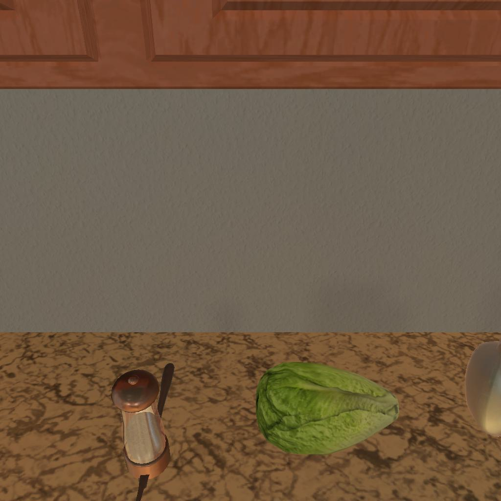

---------------------------------------------------------task: 23---------------------------------------------------------
--------------------------------------------------------------------------------------------------------------------------------------------------------------------
--------------------------------------------------------------------------------------------------------------------------------------------------------------------
Step:--------------------------------------------------------------------------2-------------------------------------------------------------------------------
----------------------------------------
VLM Prompt:
Image1:
Image2:
**Instruction**
1. Analyze the provided images to identify all visible household objects and compare the difference between images (e.h. whether the object is opened or not and taken on hand or not), focusing on those relevant to the task description "put a hot mug in coffeemachine."
2. Use the analysis of images and the task hint "The agent must find an object of the desired type, pick it up, go to a microwave, heat the object with the microwave, then find the correct location to place it, and put it down there. The agent does not need to use the microwave button or open the microwave to heat the object, and the agent just needs to do action that is "heat the object with the microwave"." to answer the question: what is the most reasonable action in the choices for the task description "put a hot mug in coffeemachine"?
3. Decide and write the answer using the template: The answer is: (i): , where i is the real number. If there is no desired object in images, search every place based on **Initial Observation** to find the object. And if no one is exactly correct, choose a similar answer.
**Initial Observation**
You are in the middle of a room. Looking quickly around you, you can see cabinet (1-15), fridge (1), countertop (1-4), drawer (1-4), microwave (1), toaster (1), coffeemachine (1), garbagecan (1), sink (1), stoveburner (1-3), sinkbasin (1)
**Answer Choices**
(1): go to cabinet 2
(2): go to cabinet 3
(3): go to fridge 1
(4): go to cabinet 4
(5): go to cabinet 5
(6): go to cabinet 6
(7): go to cabinet 7
(8): go to drawer 1
(9): go to drawer 2
(10): go to cabinet 8
(11): go to drawer 3
(12): go to cabinet 9
(13): go to cabinet 10
(14): go to drawer 4
(15): go to microwave 1
(16): go to cabinet 11
(17): go to toaster 1
(18): go to cabinet 12
(19): go to cabinet 13
(20): go to cabinet 14
(21): go to cabinet 15
(22): go to countertop 2
(23): go to coffeemachine 1
(24): go to garbagecan 1
(25): go to countertop 3
(26): go to countertop 4
(27): go to sink 1
(28): go to stoveburner 1
(29): go to stoveburner 2
(30): go to stoveburner 3
(31): go to sinkbasin 1
(32): open cabinet 1
(33): close cabinet 1
(34): examine cabinet 1
**Answer**
Let's think step by step by following the instructions.
----------------------------------------
----------------------------------------
Original Response:
First, we analyze the images. Image 1 shows a countertop with a pepper grinder, a green vegetable, and a transparent object that appears to be a mug or glass. Image 2 shows a closed cabinet. There is no visible microwave or coffee machine in these images.
Considering the task "put a hot mug in coffeemachine," we need to find a mug, heat it, and place it in the coffee machine. Since there is no mug visible in the cabinet (Image 2), and the transparent object on the countertop (Image 1) could be a mug, the most reasonable action would be to check the countertops.
The task hint suggests that we do not need to interact with the microwave or open it; we just need to perform the action to "heat the object with the microwave." Therefore, we don't need to open any cabinets or drawers to search for a microwave. We can assume that the agent knows where the microwave is located.
Based on the Initial Observation, there are multiple countertops to check. The transparent object that could be a mug is on a countertop, but we do not know which numbered countertop it is. Therefore, we should check all countertops.
The answer is: (22): go to countertop 2,
(25): go to countertop 3,
(26): go to countertop 4.
These actions are the most reasonable to find a mug, assuming the transparent object on the countertop is the mug we need to heat and put in the coffee machine. If it is not found on these countertops, we should continue to search the remaining countertops.
----------------------------------------
----------------------------------------
>>> Refine Original VLM Response and Get Pure Action: go to countertop 2,
(25): go to countertop 3,
(26): go to countertop 4
----------------------------------------
-----------------------------------------------------------------
Running time: 13.715351819992065 seconds
Total Money: 11.544610000000004
-----------------------------------------------------------------
-----------------------------------------------------------------
Text Observation:Nothing happens.
-----------------------------------------------------------------
UNSUCCEED